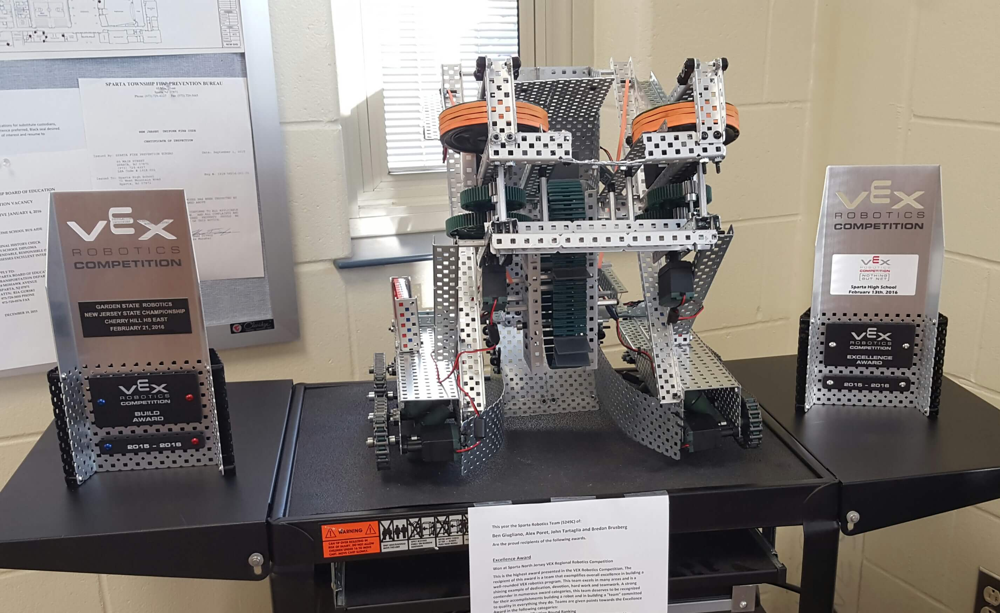
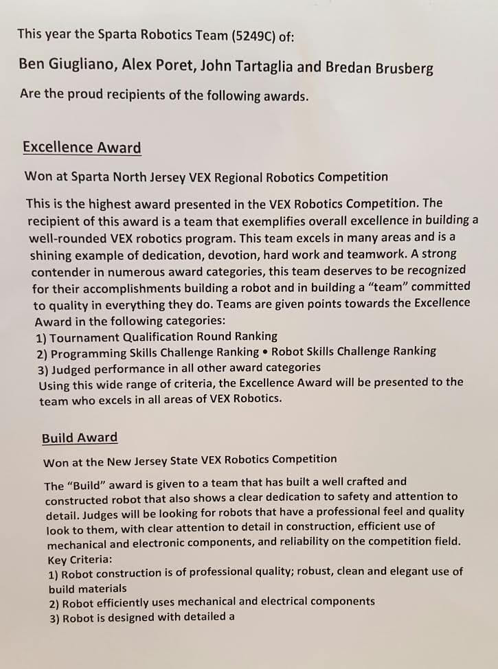

I will be updating this with the proper photos in this workbook soon
 Table of Contents
Building Stage:
A description of the preliminary measures taken before building the robot and the process of assembling the robot. This includes formally defining the issue, research, and sketches of all the robot’s subsystems. This section also includes the initial code from the robot, as well as a brief testing section showing the progress of troubleshooting the initial issues. This stage concludes with an overall reflection of the building process, and how it could have been improved.
Defining the Issue page 1
Research page 3
Sketches see subsection interlude
Initial Code page 5
Test and Evaluate page 7
Reflection page 8
Improvement Stage:
A description of each of the problems faced during the competition and if and how the team solved the issue. Every competition’s issues are broken up into three categories: “mechanical problems”, all complications resulting from physical issues, “game problems”, all complications resulting from gameplay factors such as alliances or rules, and “driving/ coding/ human problems”, issues caused directly by team members and faulty coding. Each reflection is followed by a test and evaluate section, which explains the modifications made to the robot in the following weeks till the next competition. The final code is also included here.
Competition 1: High Point High School, January 9th page 9
Competition 2: Ranney School, January 16th page 11
Competition 3: South Brunswick High School, January 30th page 13
Competition 4: Sparta High School, February 13th page 16
Final code page 19
Photo Log, in chronological order: page 23
A visual depiction of the process of troubleshooting the robot’s issues, beginning from completion of the initial build stage.
Technical Journal Reflection: page 28
A reflection on the process of creating the technical journal. This includes a thorough analysis of what went well, what needs improvement, and what the team will do next year to improve the journal.
The robot must be able to traverse a 12 x 12 foam playing field, pick up, store, and accurately throw 0.115 lb balls into either a low goal or a 36’ high goal. The entire bot must fit within an 18”x18”x18” inch box, and must be build entirely out of VEX-approved materials. Motor limits, battery limits, and other quantity constraints must also be followed. All parts of the robot must be securely fastened to the machines, i.e, they should not fall off during the match. At least two alliance colored plates must also be mounted to the robot, and must be interchangeable (due to changing colors). The bot must not easily become tangled with the other robots; there should not be small parts projected out from the robot that become easily entangled. All VEX building specifications must be adhered to strictly.
The robot also should (not necessary, but highly recommended) be able to lift another robot up above the side plane of the field (MEASUREMENT NEEDED)(4 inches low elevation (25 points) or 11.22 inches high elevation(50 points)). 15 seconds of autonomous programming are required, as well as radio-control capability. In addition, the robot must be able to store 4 balls, or less, in order to insure efficiency in collecting scoring objects. In grasping/loading balls, the robot must not puncture or otherwise damage game objects; the bot may not damage any aspect of the playing arena.
Constraints:
(Tape may only be used for labeling purposes and for the organization of wires.)
Criteria:
Source: http://www.vexrobotics.com/wiki/images/c/cb/VEX_Machinations-071108.pdf
This PDF demonstrates a basic launching device made out of VEX parts that “grabs” a ping pong ball and shoots it by running the ball through two spinning wheels. There is a gearing system attached to the wheels that allows the speed of the ping pong balls to be modified and altered. Though this is not particularly profound, the general idea of using two spinning wheels to launch a ball is particularly useful. The balls are always shot at a set angle and their speed is uniform unless altered by a controller.
This is an image from the PDF demonstrating the launching mechanism.
Source:http://www.vexrobotics.com/wiki/VEXCAD
Source: https://www.physics.uoguelph.ca/tutorials/torque/Q.torque.intro.html
In designing the shooting mechanism, it is important to consider the power and speed of the spinning disks that propel the balls forward. Even if the disks are spinning very fast, they must have enough power behind them to launch the ball. If they do not, the ball will not be propelled far enough to make it into the high goal. Torque, or the force that causes an object to rotate, is an important principle in designing an appropriate launching device. The wheels must a lot of force, or torque, behind them in order to propel the balls forward. The equation for torque, ィ = r x F = r F sin(θ), can help figure out the appropriate radius of the wheels for the necessary torque.
Source: http://lancet.mit.edu/motors/motors3.html#tscurve
Source:http://www.engineeringtoolbox.com/tractive-effort-d_1783.html
This site details an equation for traction on a car wheel. Though the exact variables in the equation, such as the adhesion coefficient, will never be known, the general principle of how certain variables affect traction still stands. For example, from this equation F = μt m g = μt W , it can be deduced that changing the mass of the car wheel influences the traction just as much as changing the weight bearing down on the wheel. For instance, decreasing the wheel’s mass by half does has the same effect on the total force as decreasing the weight by half. By examining this equation, the potential effects of extreme weight modification can be predicted. This can also be a useful equation for designing how heavy the robot can be.
Source:http://www.robotpark.com/academy/robotic-mechanisms-screw-systems/
This source details the engineering principles behind a screw jack, which allows one to elevate a platform up and down. These principles could potentially be coupled with a ramp to change the elevation of a separate platform. This could be useful in designing a shooting mechanism that can be remotely adjusted to launch at different angles. By being able to adjust the angle of the robot’s launcher, the robot is enabled to launch into the high goal from different points on the field.
Source: http://www.vexforum.com/showthread.php?t=11906
Good source for ideas, can’t be quoted, but good anyway.
Source: http://www.team20.com/history/past-robots-2012-2014/
Past challenge, consult with entire team about design.
#pragma config(Motor, port2,frontRight, tmotorNormal, openLoop, reversed)
#pragma config(Motor, port3,backRight, tmotorNormal, openLoop, reversed)
#pragma config(Motor, port4,frontLeft, tmotorNormal, openLoop)
#pragma config(Motor, port5,backLeft, tmotorNormal, openLoop)
#pragma config(Motor, port6,pickUp, tmotorNormal, openLoop)
#pragma config(Motor, port7,cannonleft, tmotorNormal, openLoop)
#pragma config(Motor, port8,cannonRight, tmotorNormal, openLoop)
//*!!Code automatically generated by 'ROBOTC' configuration wizard !!*//
/*+++++++++++++++++++++++++++++++++++++++++++++| Notes |++++++++++++++++++++++++++++++++++++++++++++
Mecanum Drive - Basic
- This program allows you to remotely control a robot with mecanum wheels.
- The left joystick Y-axis controls the robot's forward and backward movement.
- The left joystick X-axis controls the robot's left and right movement.
- The right joystick X-axis controls the robot's rotation.
[I/O Port] [Name] [Type] [Description]
Motor Port 2 frontRight VEX Motor Front Right motor
Motor Port 3 backRight VEX Motor Back Right motor
Motor Port 4 frontLeft VEX Motor Front Left motor
Motor Port 5 backLeft VEX Motor Back Left motor
Motor Port 6 pickUp VEX Motor Pick Up motor
Motor Port 7 cannonRight VEX Motor Cannon Left Motor
Motor Port 7 cannonRight VEX Motor Cannon Right Motor
--------------------------------------------------------------------------------------------------*/
task main(){
while(1 == 1){
motor[frontRight] = vexRT[Ch3] - vexRT[Ch1] - vexRT[Ch4];
motor[backRight] = vexRT[Ch3] - vexRT[Ch1] + vexRT[Ch4];
motor[frontLeft] = vexRT[Ch3] + vexRT[Ch1] + vexRT[Ch4];
motor[backLeft] = vexRT[Ch3] + vexRT[Ch1] - vexRT[Ch4];
// Movement:1 JoyStickLeft | PickUp:Group 6======================================
//Movement Mapping
/*
motor[frontRight] = vexRT[Ch3] - vexRT[Ch4];
motor[backRight] = vexRT[Ch3] - vexRT[Ch4];
motor[frontLeft] = vexRT[Ch3] + vexRT[Ch4];
motor[backLeft] = vexRT[Ch3] + vexRT[Ch4];
*/
if(vexRT[Btn8L] == 1)
{
motor[frontRight] = 100.0;
motor[backRight] = 100.0;
motor[frontLeft] = 100.0;
motor[backLeft] = 100.0;
}
else if(vexRT[Btn8R] == 1)
{
motor[frontRight] = -100.0;
motor[backRight] = -100.0;
motor[frontLeft] = -100.0;
motor[backLeft] = -100.0;
}
else
{
motor[frontRight] = 0;
motor[backRight] = 0;
motor[frontLeft] = 0;
motor[backLeft] = 0;
}
//PickUp Mapping
if(vexRT[Btn6U] == 1)
{
motor[pickUp] = 127;
}
else if(vexRT[Btn6D] == 1)
{
motor[pickUp] = -127;
}
else
{
motor[pickUp] = 0;
}
/*
Make an if then statement that is if (insert button name) == 1 then use you can either use 1 for loop or 2 different ones. I used 2 different ones for a slow acceleration and then it accelerates quicker so a slow acceleration would be
for (int accelerateSlow = 0; accelerateSlow >= 65; accelerateSlow += 3)
{
set motors equal to accelerateSlow
delay(800);
}
Then just make another one where you change the data
for (int accelerateSlow = 65; accelerateSlow >= 127; accelerateSlow += 20)
{
set motors equal to accelerateSlow
delay(200);
*/
//================================================================================
Issue |
Testing Solutions |
Result |
Both cannon motors inconsistently cut out. |
Add two more motors to power the cannon system. |
Works significantly better. |
Left cannon motor inconsistently cuts out. |
Change battery. |
No change in response. |
Add power extender and extra battery. |
No observable response. |
|
Change cannon wheels to a lighter variety. |
No change in response. |
|
Reposition base to prevent gears from grinding against extraneous components. |
Works significantly better. |
|
Wheel base slows uncontrollably. |
Tighten screws and other loose components around axels. |
No significant change. |
Readjust and check programming. |
No change. |
|
Redistribute screws to avoid contact with wheels. |
Wheel base runs smoothly: issue resolved. |
|
Robot does not meet size specifications → exceeds height limit. |
Lower angle of cannon device. |
Bot fits within height limit. |
Robot does not meet size specifications → exceeds width limit. |
Cut down axles and adjust base. |
Robot fits within specifications. |
Two of the cannon motors shake while in use. |
Adjust the stand for the motors and add bracing. |
Motors do not shake - issue resolved. |
When building the bot, it became apparent that better planning was needed throughout the entire process of construction. Often times certain elements of the robot were assembled in advance that blocked other areas that needed to be modified. For example, placing the intake system on the bot before designing the launching system led to issues when the launching system needed to be attached. The intake system had limited attachment areas available, which made bracing the launching system difficult. Though this issue was eventually remedied by drilling extra holes in the metal to manually create attachment points, better planning could have saved the team extra time.
Time was also a huge issue when creating the bot. Due to the team’s sometimes erratic meeting times and conflicting schedules, getting the entire group together proved difficult. This greatly hindered progress on the robot. Whereas there should have been time to test and evaluate the robot after it was built, the team struggled to complete the robot in time for competition. The robot was completed by the first competition date, however there still were many untested aspects of the bot that could cause problems. This lack of time is also apparent in the group’s technical notebook, which is contains undeveloped sections, such as the “test-and-evaluate” section and research documentation. Time constraints prevented the team from being able to thoroughly research and refine many aspects of the robot, since the majority of time was spent trying to physically build the bot. From this experience, the team will now try to be more efficient with its time and prioritize more, insuring no aspect of the robot gets neglected.
Overall, for the first competition, our robot worked relatively well. The team finished 21st in qualifying, though, an obvious reminder that improvement is needed. The robot was able to make both high goals and low goals, however not at the rate of which was necessary to be competitive. There were numerous problems with the bot’s coding and build, which led to problems throughout the competition. The problems experienced can be divided into categories as follows:
Strict Mechanical problems:
Before the match, it was noticed that one of the cannon system’s axles were bent, and therefore rotation was slightly unreliable. This had to be changed before completing the Skills Challenges, which caused extensive time constraints. Though the group was able to participate in 2/3 Skills Challenges, time constraints rendered the group unable to participate a third time.
Throughout the day, the batteries in the robot had to be changed several times in order to fully power the cannon system. This poses an obvious problem, since one cannot alter battery power during the match. This, unfortunately, was not able to be resolved during the competition. Deciding last minute to disconnect the robot’s power expander (could not get the expander to work) and swap it out for a 9V battery caused liabilities in the robot.
Throughout the entire competition, it was noticed that the axles running the cannon system continually shook, leading to shooting inaccuracies. At times the motor cut out, which led to a significant decrease in points. Even when numerous solves were attempted (reassembling the cannon system, changing screws, etc.) the axles still shook. This was determined to be a design problem, one too great to fix at the competition. Had the axels been braced better, the robot could have scored numerous more goals and would have been more reliable.
Game Problems:
Having the gear chain placed outside of the robot's wheel base compromised the bot in one match. Our partner banged into the side of our bot and snagged our chain in two places, breaking not one, but two separate chains. Though this problem was easily remediable when the match ended, it is still a possible weak point that can compromise matches.
Driving/Coding/Human Problems:
In order to reach a high goal during autonomous, our robot had to be aimed correctly at the net. In the initial matches, our group aimed by positioning the robot’s shooting mechanism, judging angle from behind the robot. This nearly always led the robot to be off aim. Halfway through the competition, the team switched our aiming strategy, sending one person behind the net to judge whether the robot was aimed correctly. This worked better than the previous strategy, and led the robot to get more high and low goals in.
During our first match, one of the team members forgot the rules of autonomous and tried to driver load during the 15 second stat period. As a result, the team was forced to put the controller down, which rendered the robot inactive. Had this mistake not been made, the match would have been won. The opposing team only scored 2 points, which was easily beatable, however the team was unable to score any more points. Our partner could not singularly score enough points, leading to a match loss.
After trying to modify the intake system code between matches, a mistake occurred in the code which rendered the intake system inactive. Our robot's autonomous relies on the intake system to store and release preloads. This mistake rendered the team unable to shoot any balls during the 15 second autonomous period. By rushing to change the code in between matches and neglecting to test the system, the team lost a possible 15 points from autonomous.
During the autonomous skills challenge, the robots autonomous only ran for 30 seconds, instead of the minute and 15 seconds allowed. This led to a significant reduction of points. Unfortunately, due to time constraints, the team did not have time to attempt the autonomous match again. Had the robot been tested beforehand, this discrepancy could have been avoided.
Driving inexperience, though simple, led to a reduction in points early in the competition. As the competition progressed, more points were gained, not just because of mechanical fixes, but because of driver experience. The driver became more comfortable maneuvering the robot and picking up balls. Unfortunately, the driver was not able to practice driving the robot beforehand, a problem which will be remedied by the next competition.
|
Issue |
Testing Solutions |
Result |
|
Both cannon motors still cutting out. |
Change gear ratio and modify casing around gears. |
Works significantly better. |
|
Add additional bracing. |
Though the competition began well, communication problems hindered the bot’s performance in the tournament, leading to a last place finish in qualifying. The majority of the competition was spent troubleshooting the robot’s issues. In the end the robot’s issues were fixed with the help of another team’s adult mentor, however by the time such issues were resolved, the majority of the competition had passed.
Strict Mechanical problems:
Once again, the main cannon motors shook, causing the cannon wheels to slow down and sometimes cut out. This issue was resolved by creating some last minute bracing at the competition. By bracing the top of the motors to the side of the bot, stability was greatly improved.
After adding the additional bracing to the canon system, an immense amount of friction was exerted upon the axles. This was resolved by adding dry silicone spray onto the axles in order to decrease friction.
During the entire tournament, the team was consumed with communication issues. After the first match, the bot became immobile and stopped working, a problem which did not seem to have any purely mechanical cause. It was discovered that the controller would not connect to the robot, no matter whether it was directly connected to the robot through a wire or through the wifi stick. This led the team to believe that the controller was damaged. Other circumstances, such as the controller falling and the possibility of dry lubricant interfering with hardware, seemed to validate the team’s claim.
In order to test the hypothesis that the controller wasn’t working, the team borrowed another team’s controller and attempted to download the team’s code onto it. First the team had to download firmware onto the controller, however the team’s computer kept displaying an error message. After switching out the computer and wire several times, the new controller would not connect. Eventually the team used another team's computer to download firmware onto their original controller. This solved the problem: downloaded the new firmware allowed the robot to connect again to the controller. By the time the issue was resolved, though, the majority of competition matches were over, decimating the team’s qualifying ranking. The time the robot spent inactive effectively caused the loss of every match.
|
Issue |
Testing Solutions |
Result |
|
Even with a number of changes, the cannon system still erratically stalls out.
|
Cannon redesign: the gear system bracing was redesigned in order to be provide more support and decrease friction. |
Not determined yet: more evaluation needed. |
|
With the cannon redesign, the intake system’s height became obtrusive. |
The intake system’s height was reduced by moving the two inner gears closer together. |
Intake system still works effectively with the decreased height.
|
This competition went well overall, a significant improvement from the other two competitions. Even though random errors in human issues hindered the bot’s initial performance (two alliance partners didn’t show up), the robot revived itself in its final matches. Though there were a few consistent issues that plagued the bot during the competition, they were less devastating than those in previous tournaments. Many of these issues were able to be fixed in the time between matches. In addition, the bot performed better in Skills Challenges than in previous competitions. Even though the bot did not make it to the final tournament, this competition was an improvement over the previous ones.
Strict Mechanical problems:
Due to modifications made before the competition, the intake system’s chamber was slightly too small for the ball. This led to intense pressure when loading balls, which made preloading and general game play an issue. This robot relies on using the intake chamber as a loading zone for preloads, so the excess pressure made it difficult to load balls. In addition to this, the system bracing the intake system eventually came loose, which further complicated the issue. Many balls nearly got stuck in the chamber. To combat this, the team had to quickly reposition the intake, which consequently caused errors in wiring and cannon placement.
When the intake system was modified, the team had to detach the cannon system from the bot. Many wires had to be unplugged at the site of extension cables. Due to the lack of time between matches, the team neglected to keep track of the polarity of the extension wires. Seconds before the game began, the team was forced to haphazardly reattach all the motors, which resulted in polarity issues. Certain motors ran backwards, and the team was forced to fix the issue mid competition. This resulted in a loss of time, and consequently a loss of points.
During the several rounds of preliminary competition, the team found that the robot drained its battery fairly quickly. When the battery charge became neglected, the robot’s flywheels began to slow down and falter during the match. The low battery charge eventually leading to a total loss of communication. In order to fix this, the team attempted to install a power splitter. This however, was eventually scrapped after the wiring nearly short circuited. With both time and material constraints, it was not feasible to make such a drastic change during competition.
When the cannon system was reattached after the intake system was modified, it was accidently reassembled crooked. The “barrel” of the cannon was slightly turned, no longer parallel to the ground on the x axis.This, however, did not appear to be an issue during the competition; aiming and shooting did not appear to be modified.
During both the Skills Challenges and the qualifying tournament, the robot chronically overshot the high goal net. The power level of the motors was set drastically high, which made it nearly impossible to accurately shoot at any goal. At one point, the team was even forced to put their controller down due to balls overshooting the net and hitting spectators.
Driving/Coding/Human Problems:
During two rounds of qualifying matches, the team’s alliance partner was absent from the field. These two rounds were both losses for the team, which can at least partially be attributed to being outnumbered on the field.
|
Competition and Post Competition Modifications |
||
|
Issue |
Testing Solutions |
Result |
|
The intake system chamber was slightly too small, leading to increased pressure of the balls. |
Reassemble the intake system to expand the chamber. |
Balls enter and exit the chamber smoothly; there is no pressure on the balls. |
|
The intake system wobbled during matches. |
Extra bracing was added to the sides of the intake. |
The intake system no longer is unstable. |
|
The canon system was reassembled crookedly on the robot after intake system modifications. |
Readjust the cannon system to be parallel to the ground (on the x axis). |
The cannon is now stable and shoots well. |
|
The robot often ran out of charge during matches. |
Add power splitter - attempt on (in competition). |
Short circuited - had to be detached. |
|
Add power splitter - attempt post competition. |
Splitter works, however wiring within the spitter was determined to be faulty. |
|
|
Wires within the power splitter are faulty, leading to power cutting out. |
Position the wire connecting the splitter to the battery such that tension holds the wire in a specific place. |
Splitter works better, however is still sometimes, though to a lesser degree, inconsistent. The team decided to keep this modification even with its liability due to its benefits in competition. |
|
The right front wheel motor became inactive after the power splitter was installed. |
The motor was replaced. |
No change - wheel still inactive. The issue was determined to be a coding problem after the new motor was tested in another port. |
|
Check the port numbers and adjust the coding. |
Wheel runs fine. |
|
|
During modifications, one of the cannon motors began to click and then cut out. |
The motor was replaced. Upon further investigation of the old motor, it was found that one of the gears inside was completely stripped. |
The new motor adequately powers the cannon. |
|
The robot chronically overshot the high goal. |
Lower the speed of the motors near 50 and add a range of potential speeds to deal with decreasing battery voltage. |
Robot now makes ¾ high goals, a significant improvement. |
In a stark contrast to previous competitions, the bot preformed optimally, not only winning six out of seven qualifying rounds, but also achieving a fourth place finish in the finals. In addition to this, the bot increased its programing and driving skills scores exponentially, scoring 47 points in robot skills and 87 points in programming skills. The team also received an Excellence Award in this competition. Though issues did occur during the tournament, primarily battery and operating problems, they were fixed efficiently and quickly. This, coupled with significant coding modifications made during the previous week, allowed the robot to excel.
Nevertheless, there were still many improvements that could have further elevated the bot’s performance. The team debated several mechanical issues during the tournament, specifically the loading system. Yet despite these debates and issues, the robot performed exceptionally well, qualifying for the state championship.
Strict Mechanical problems:
As previously explained in the preceding week’s test and evaluate sheet, the robot had significant issues with its power splitter. Last week, the power splitter was already determined to contain faulty wiring, however the team decided to go ahead and use the splitter anyway (see further explanation in test and evaluate). This resulted in issues during the competition. The splitter wire, and the connected battery wire, had to stay in the exact same position in order for the splitter to function properly. This meant the team could not change, or even check the voltage of the battery connected to the splitter, because if they did, there was a chance the reconnected wires would have moved out of alignment. This battery ran all the robot’s wheels, so if the battery’s voltage became low, the robot could become stranded in the middle of the field. This looming consequence hung over the team.
At first the team simply modified their strategy to shoot mainly preloads and stay within the starting area as long as possible, that way a member (who had carried a battery with them to the field) could change the battery if the voltage became too low and the robot lost communication. The team figured that if the battery was already dead, the risk of dislodging the splitter’s wiring didn’t matter, since the robot was already noncommunicative.
The robot made it through the qualifying rounds without running low on voltage, however before the finals, the team was forced with the decision to either check and change the batteries voltage and risk disrupting the splitter, or take their chances on the field with a potentially low battery. After much debate, the team decided to risk dislodging the wiring and to change the battery. Luckily, the splitter’s wiring stayed aligned when the new battery was attached, and the robot had no further battery issues during the competition.
Nearly all of the balls shot during the 15 second autonomous period of the tournament fell short. Usually one or two balls bounced into the low goal, which oftentimes secured the team the 10 point autonomous bonus, however overall the programming did not work well. The flywheels did not speed up in time, so when the robot began to shoot balls, they all fell short. The team tried to fix this issue by increasing the allotment of time for the wheels to speed up before the robot started shooting, however this modification only caused a slight improvement. The team therefore decided to forgo fixing the issue during the competition for a more thorough analysis after the tournament.
During the entirety of the tournament, several screws fell out of the bot. Though these screws were not imperative to the subsystems of the bot system, they often times loosed the support systems holding up such elements. For example, the bracing of the shooting system oftentimes lost screws. These screws had to be continually reattached and tightened.
The intake system of the robot was placed too close to the ground, which resulted in issues intaking balls on the field. The distance between a gear of the intake system and the ground was slightly too small for a ball to fit through. Though the robot was able to collect the ball, its front wheels were slightly lifted off the ground when intaking. This resulted in an uncontrollable jerking motion that hindered controlling the bot. Because the entire intake subsystem would have to be taken off to address the issue, the team decided not to resolve the jerking motion till a later date.
The field shooting mechanism of the robot was fairly inaccurate, which lost the team a lot of points. The robot’s flywheels relied on differences in speed to shoot balls various distances, however coordinating those speeds with mid range distances proved difficult. This, coupled with the the unknown time it took the flywheels to speed up to full power, made it even more troublesome to control the speed of the wheels. It was near impossible for the driver to tell what speed to shoot the balls at and if the flywheels had reached that speed or not. Though the robot could shoot accurately from the starting goal, which made up for many of the lost points, this still proved to be a debilitating issue. Specifically, the team lost a lot of scoring opportunities with red balls, which proved extremely detrimental.
Driving/Coding/Human Problems:
Because the team placed in the top six of the qualifying tournament, they were able to pick their alliance partners. When it came time to announce the third alliance partner pick, the team captain announced the right team number, but accidently said the wrong team letter. Even though they tried to resolve the issue as soon as the wrong letter was announced, the team was stuck with an otherwise unintended partner, which hindered tournament strategy.
Because the robot uses a flywheel launcher to shoot balls, the speed of the wheels decelerates slightly after every shot. This means one has to wait a few seconds for the wheel to accelerate back up to the proper speed. If the ball is loaded too soon, it does not contain enough speed and falls short of the high goal. Timing this “wait” period proved difficult for the team when shooting driver loads. Every round, it took about five shot attempts before a “rhythm” was established, where the ball loader loaded balls at a pace that allowed the flywheels to accelerate back to the proper speed. Establishing the rhythm wasted balls, and therefore lost the team points. If the team had practiced shooting before the competition, perhaps they could have already established a timing system that eliminated the “trial and error” period of establishing a loading rhythm.
|
Competition and Post Competition Modifications |
||
|
Issue |
Testing Solutions |
Result |
|
Power expander contained faulty wiring that often became misaligned and lost connection. |
Replace power expander with new device. |
Power expander works consistently and effectively. |
|
The intake system is placed too low to the ground, which causes the robot to jerk slightly every time it picked up a ball. The tension between the ball and the ground pushed the robot upwards slightly. |
Move the gears in the intake system a centimeter close to each other in order to increase the space between the bottom of the system and the ground (see images in photos section). |
The robot picks up balls without jerking: issue is resolved. |
|
Modifying the gears of the intake system created an issue with the intake’s chain. The modification caused the chain to be comparatively too long. |
Remove three links from the chain. |
The resulting chain is too short and will not connect. |
|
Remove only two links from the chain instead. |
Resulting chain length is still too long. It was decided to keep this chain length as it still efficiently picked up balls, even if it was slightly loose. |
|
|
During the autonomous section of the tournament the robot’s flywheels did not accelerate quickly enough to shoot the preloaded balls into the high goal. |
Increase the time between accelerations during the autonomous period. |
No conclusion yet: time constraints led to insufficient testing. |
http://www.robotc.net/tutor/Cortex/cortex.php?platform=Cortex&unit=vexnetremotecontrol&lesson=1 http://cdn.robotc.net/pdfs/natural-language/Natural_Language_Cortex.pdf http://www.robotc.net/wikiarchive/Tutorials/Getting_Started/Getting_Started_with_the_VEX_CORTEX http://help.robotc.net/WebHelpCortex/index.htm#page=ROBOTC_Functions_New/VEX2_Functions_Remote_Control_-_VEXnet.htm
#pragma config(Motor, port1,frontRight, tmotorNormal, openLoop, reversed)
#pragma config(Motor, port3,backRight, tmotorNormal, openLoop, reversed)
#pragma config(Motor, port5,frontLeft, tmotorNormal, openLoop)
#pragma config(Motor, port6,backLeft, tmotorNormal, openLoop)
#pragma config(Motor, port2,cannonLeft, tmotorNormal, openLoop)
#pragma config(Motor, port4,cannonLeftT, tmotorNormal, openLoop)
#pragma config(Motor, port9,cannonRight, tmotorNormal, openLoop)
#pragma config(Motor, port7,cannonRightT, tmotorNormal, openLoop)
#pragma config(Motor, port10,pickUp, tmotorNormal, openLoop)
//*!!Code automatically generated by 'ROBOTC' configuration wizard !!*//
#pragma platform(VEX)
#pragma competitionControl(Competition)
#pragma autonomousDuration(5)
#pragma userControlDuration(999999999)
#include "Vex_Competition_Includes.c"
//#pragma DebuggerWindows("debugStream")
bool starting=true;
int controlSpeed = 0;
int motorSpeed= 0;
/*+++++++++++++++++++++++++++++++++++++++++++++| Notes |++++++++++++++++++++++++++++++++++++++++++++
Mecanum Drive - Basic
- This program allows you to remotely control a robot with mecanum wheels.
- The left joystick Y-axis controls the robot's forward and backward movement.
- The left joystick X-axis controls the robot's left and right movement.
- The right joystick X-axis controls the robot's rotation.
[I/O Port] [Name] [Type] [Description]
Motor Port 2 frontRight VEX Motor Front Right motor
Motor Port 3 backRight VEX Motor Back Right motor
Motor Port 4 frontLeft VEX Motor Front Left motor
Motor Port 5 backLeft VEX Motor Back Left motor
Motor Port 6 A cannonleft VEX Motor Bottom Left Cannon motor
Motor Port 7 B cannonLeftT VEX Motor Top Left Cannon motor
Motor Port 8 C cannonRight VEX Motor Bottom Right Cannon motor
Motor Port 9 D cannonRIghtT VEX Motor Top Right Cannon motor
--------------------------------------------------------------------------------------------------*/
void cannonRun()
{
if(motorSpeed < 40){
motorSpeed = 40;
}
motor[cannonLeft] = motorSpeed;
motor[cannonLeftT] = motorSpeed;
motor[cannonRight] = -motorSpeed;
motor[cannonRightT] = -motorSpeed;
if (motorSpeed < controlSpeed)
{
delay(14);
motorSpeed++;
}
if(motorSpeed > controlSpeed){
delay(14);
motorSpeed--;
}
//writeDebugStreamLine("MotorSpeed: ", motorSpeed);
}
void cannonStop()
{
motor[cannonLeft] = motorSpeed;
motor[cannonLeftT] = motorSpeed;
motor[cannonRight] = -motorSpeed;
motor[cannonRightT] = -motorSpeed;
delay(100);
motorSpeed --;
if (motorSpeed < 0)
{
motorSpeed = 0;
}
//writeDebugStreamLine("MotorSpeed: ", motorSpeed);
}
void pre_auton(){
}
task autonomous(){
//AutonomousCodePlaceholderForTesting();
//Change Autonomous Time Above to Shorten or remove automonous
//Need to account for the time for the motor to speed up
while(1==1){
controlSpeed=62;
cannonRun();
delay(9000);
motor[pickUp] = -127;
cannonRun();
}
}
task usercontrol(){
//task main(){
clearDebugStream();
while(1 == 1){
motor[frontRight] = (vexRT[Ch3] - vexRT[Ch1] - vexRT[Ch4])/1.5;
motor[backRight] = (vexRT[Ch3] - vexRT[Ch1] + vexRT[Ch4])/1.5;
motor[frontLeft] = (vexRT[Ch3] + vexRT[Ch1] + vexRT[Ch4])/1.5;
motor[backLeft] = (vexRT[Ch3] + vexRT[Ch1] - vexRT[Ch4])/1.5;
// Movement:1 JoyStickLeft | PickUp:Group 6======================================
//Movement Mapping
/*
motor[frontRight] = vexRT[Ch3] - vexRT[Ch4];
motor[backRight] = vexRT[Ch3] - vexRT[Ch4];
motor[frontLeft] = vexRT[Ch3] + vexRT[Ch4];
motor[backLeft] = vexRT[Ch3] + vexRT[Ch4];
*/
//PickUp Mapping
if(vexRT[Btn6U] == 1)
{
motor[pickUp] = 127;
}
else if(vexRT[Btn6D] == 1)
{
motor[pickUp] = -127;
}
else
{
motor[pickUp] = 0;
}
//Power ON
if (vexRT[Btn7U] == 1)
{
cannonRun();
}
else
{
cannonStop();
}
//Increase Speed
if (vexRT[Btn5U] == 1)
{
if(controlSpeed <62){
controlSpeed++;
delay(25);
}else controlSpeed = 62;
}
else
{
if(controlSpeed > 40){
controlSpeed = 40;
}
}
//Decrease Speed
if (vexRT[Btn5D] == 1)
{
if(controlSpeed > 40){
controlSpeed--;
delay(25);
}else controlSpeed = 40;
}
}
}
|
January 11th - January 15th |
|
|
|
|
|
Switching to a 9V battery backup instead of a power expander. |
The remnants of the power expander, which were kept in place for later adjustments. |
|
January 4th - January 8th |
||
|
Readjusting the cannon subsystem… |
Completed intake subsystem - view #1: full shot. |
|
|
January 11th - January 15th |
|
|
After realizing that a shaking chassis caused the cannon system to fire erratically, extra bracing in the form of vertical bars were added. |
In order to fit in height constraints, the cannon system had to be adjusted downward. The cuts for the modification are seen here. |
|
January 11th - January 15th |
|
|
The completed intake system view #2: loading area: this is the entry zone for balls. |
The completed intake system view #3: release area. this is the exit zone for balls. Balls are shuttled up the “tube” area and are propelled into the cannon subsystem by the flaps. |
|
January 11th - January 15th |
|
|
This is the motor setup for the mechan wheels. |
Readjusted gear chain. This chain does not modify the gear ratio excessively, however it does prevent gears from locking up as they did before. |
|
January 18th - January 29th |
||
|
Bracing was added to the cannon system in order to stabilize the shaking wheel. |
The bot’s cannon system was removed in order to add more bracing. This exposed the asymmetricality of the launch system. |
The bot’s intake system was then removed in order to shorten the subsystem’s height to make room for the redesigned cannon system. |
|
January 18th - January 29th |
|
|
Rubber bands were added to the cannon’s wheel in order to increase traction. |
Dry silicon was added to the axles in order to decrease friction within the canon system. |
|
February 1st - February 12th |
|
|
The right front wheel motor was replaced after it became inactive. Later this was determined to be a coding problem, not a mechanical problem. |
Due to recurrent battery issues, a power splitter was added to the bot. |
|
February 18th - February 19th |
|
|
The intake system in the process of being taken apart. The bottom gears’ axle, shown here, was moved upwards one centimeter (from the first hole to the second hole). |
The intake system modifications caused the chain to be too long if two links were removed, and too short if three links were removed. This is an image of the chain with two links removed. |
Overall, this year’s technical journal could be considered mediocre. There were both positive and negative facets of the journal, and many elements could have been improved greatly. Though specific descriptions of the design process were detailed and effective, the overall consistency of the journal entries was lacking. As mentioned by the journal judges during the Sparta High School Competition, the journal lacked fluidity. There should have been more consistent journal entries and more pictures in order to show the continuity of the design process. Dates also were an issue when creating the journal. Each date should have been recorded the day of the robot modifications. Even though the journal was updated consistently, there was no way to show that regularity. Though a team member was able to backtrack through Google Doc’s saving system and determine weekly dates from the program’s running log of modifications, this issue could have been avoided easily by simply dating each entry from the start of the process.
Achievements and Pros of the Journal:
Improvements that Should be Added for Next Year’s Journal: